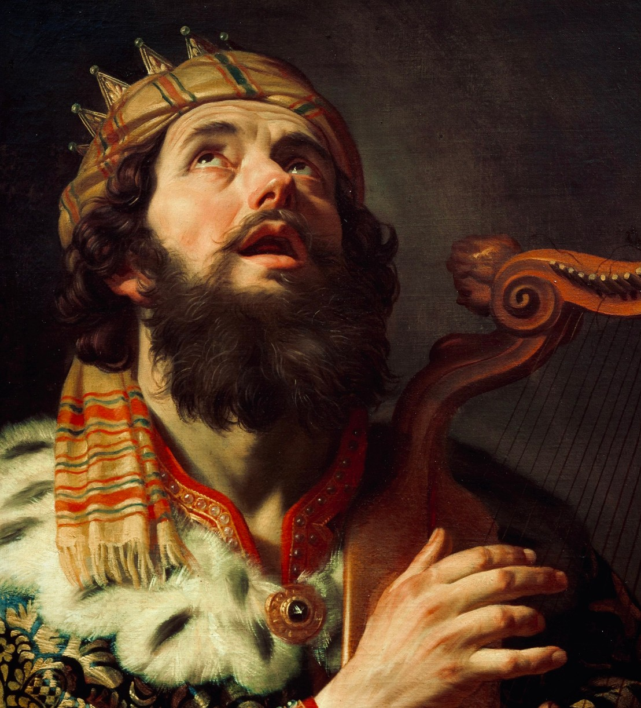

Mathematics and the God of Scripture
August 2, 2025

How precious to me are your thoughts, O God!
How vast is the sum of them!
If I would count them, they are more than the sand.
Psalm 139:17–18a
I begin with a simple question. Where and when does two plus two equal four? This is not a trick question. Two plus two equals four at every place and at every time. This much is clear.
Now, you might say that things are different in China, because there they don’t know what “two” means and what “plus” means. There, they say 二加二等于四. But of course, the underlying mathematical principle is the same—it is only the language and symbolic convention that is different.
Or, you might say that things were different before humans (and other animals) walked the earth. Back then, when there were only trees and jellyfish, there was no concept of “two” and no concept of “four,” because there was no mind to think those concepts into reality. But even in those early days, two plus two still equaled four. After all, just because there was no mind to count them, that doesn’t mean two rocks and two rocks ever made five rocks. Two plus two always equals four.
So, two plus two equals four at every place and at every time. Now, this is an observation that is true of other facts of life as well: opposite charges always attract and the speed of light is always
c, at every place and at every time.
But how about
outside of our space, and
outside of our time? Suppose there is another universe parallel to ours that is entirely different. Suppose that in this universe (let’s call it Flatland), there are only two dimensions, there is no such thing as gravity, and you can even travel back in time! Instead of quarks and electrons, Flatland is just an infinite sea of neutral particles that we’ll call flatons, noodling around in space without doing very much at all. Clearly, many facts of our universe are not true in Flatland. There is no concept of gravity, and the speed of light isn’t
c because there is no light! But does two plus two equal four? In Flatland, do two flatons and two flatons make four flatons? They certainly do.
So, two plus two equals four, irrespective of place, time, or even
universe. More fundamental even than physical laws, mathematical truth is
omnipresent and eternal, transcending even the natural order.
[Now, when we say it like
that, the Christian is inevitably on the edge of his seat, immediately thinking of ways to weaponize this for his next evangelistic encounter, while the atheist is probably looking nervously for the nearest exit. But, the eternality and transcendence of mathematics is not quite a direct proof of the existence of God. Mathematical truth is not itself God—or at least not God as we traditionally understand God. Mathematics is not
personal—it does not think or act. Therefore, there are plausible non-theistic theories for why mathematics should exist. Yet, the eternality and transcendence of mathematics should give the atheist or the naturalist significant pause. You cannot touch mathematics. You cannot put it under the microscope or run experiments on it. It is not something that we can contain, whether in a cage or a collider. But it exists—and more than that, it intricately coheres with and upholds the observable world around us. Isn’t this at least a hint that the atheistic worldview has serious deficiencies? That there is more to this life than the world we see with our own eyes around us?]
When viewed in relation to God, mathematics is fundamentally different from all the other disciplines. That is because mathematics (if we include logic under its umbrella) is the only discipline that exists independently of creation. The sciences and the humanities do not exist without the world that we have around us. There is no physics without the Sun and the planets, there is no biology without the plants and the animals, and there is no literature without the tumultuous drama of human life. But mathematics is unique because it is eternal and unbound by time. It describes creation and creation depends on it, but it does not depend on creation. Mathematics is an eternal, uncreated reality. (If you disagree, simply think about whether 1 + 1 + 1 = 3 was true before the creation of the world.)
But from a theological perspective, this could be a thorny conclusion for some. If mathematics is uncreated, then is it God? After all, there is no uncreated object except God himself—if there was, then either God would depend on it (a denial of his aseity) or it would be another god (a denial of his oneness and supremacy). Now, as we know, mathematics is of course not God. Mathematics is not personal. It cannot think, speak, or act. Mathematics cannot simply be identified with God. Rather (and this is my thesis), as an uncreated reality, mathematics is best understood as a part of
the eternal thoughts in the mind of God.
Let us use love as an example. Is love created? Is the concept or metaphysical reality of love a part of the temporal, created realm? The answer is a clear no. Love is eternal. There was never a time when love was not. We see this most clearly in Jesus’ high priestly prayer. Praying on behalf of all believers, he says, “Father, I desire that they also, whom you have given me, may be with me where I am, to see my glory that you have given me because
you loved me before the foundation of the world” (John 17:24). Before the creation of the world, in all eternity, the Father loved the Son in their unchanging, intra-Trinitarian fellowship. Love is as eternal and uncreated as the Trinity. But is love the same as God? No, love is not God. But nor is it some metaphysical reality external to God. Rather,
God is love (1 John 4:8). As one of his attributes, love is who he is. He does not create love, nor does he adhere to love as some sort of external standard. Love emerges from his essence as simply as wetness emerges from the essence of water. Water does not need to
do anything to generate the concept of wetness, nor could wetness exist without the existence of water. Wetness is a meaningful concept simply by virtue of water being water. Love is a meaningful concept simply by virtue of God being God.
Now, mathematics is a set of concepts that exists in relation to God in a way very similar to the concept of love. Mathematics is not created. It emerges from the very essence of God. In the same way that love is unchanging because it emerges from the eternal relations of the Godhead, the truths of mathematics are unchanging because they arise from his
mind as eternal
thoughts. Just as truth only takes on significance and reality in connection to a mind which thinks it, mathematics exists because God
thinks it. Mathematics is the wisdom of God. It does not change because God does not change. It proceeds forth eternally from the mind of God as a stream springs forth from a fountain. To know mathematics is to perceive somewhat of the infinite wisdom of God. To enjoy it is to bask in the timeless radiance of God’s own mind.
So, the next time we see a child doing her times tables in the sand at the beach, we should know that she is doing something far more profound than when she is listening to her bedtime stories or learning about why the sky is blue. Those other things are all well and good—they tell us of God and his glory as revealed in the created order. They allow us to know God through his works in time and space. But to study mathematics—from arithmetic to abstract algebra—is to participate in the very thought life of God that has been going on for all eternity. All of our other creaturely interactions with God come through his creation. When we think about mathematics, we are meeting God outside of space and time in the eternality of his own mind. We are, to borrow Kepler’s phrase, “thinking God’s thoughts after him.” What could be more profound?
Finally, I would be remiss if I did not discuss how mathematics points to Christ. It should not surprise us that mathematics shares many similarities to Jesus Christ. After all, as I have just argued, mathematics proceeds from the essence of God as his
thought. In a similar but albeit greater way, Christ is begotten of the Father as the eternal Son and proceeds from him as the eternal
Word—Christ Jesus “who became to us
wisdom from God” (1 Cor 1:30). What are the connections? Here are two:
First, we see in physics that it is mathematics which describes the world and upholds its natural processes. But Scripture tells us that it is Christ, the true wisdom of God, in whom “all things hold together” (Col 1:17), who “upholds the universe by the word of his power” (Heb 1:3). If mathematics is the glue of the
physical world, then it is Christ who is the glue of the
entire world. Our understanding that mathematics makes the world go round should point us to a deeper mystery: Christ the
ultimate governor and sustainer of creation.
Second, we see in how we interact with it that mathematics is both transcendent and immanent. It is transcendent in that it is eternal and contains mystery beyond the comprehension of any human. But though it is unfathomable, it is not unknowable. Much like God, mathematics is immanent in that we can actually comprehend it and apply it to our situations. Two plus two equals four is a transcendent truth, but sometimes it is also as mundane as saying that two and two apples make four apples. Is this not also how we understand Christ? Christ Jesus is the infinitely transcendent one—“the radiance of the glory of God” (Heb 1:3). But he condescended to humanity: “the Word became flesh and dwelt among us” (John 1:14). And when his Spirit comes upon us and renews our hearts, he applies the intimacy of his very own presence to our souls. If there is one takeaway here, it should be this: the fact that mathematics is intelligible to us is a sign (if not a proof) that God is transcendent but not distant. We are, to put it one way, “on the same wavelength.” If even children can probe the thoughts of God in two plus two equals four, should we not search for other ways in which God has made himself known to us?
Bibliography
Anderson, James N., and Greg Welty. “The Lord of Noncontradiction: An Argument for God from Logic.”
Philosophia Christi 13, no. 2 (2011): 321–38.
Poythress, Vern S. “A Biblical View of Mathematics.” In
Foundations of Christian Scholarship: Essays in the Van Til Perspective, edited by Gary North. Ross House Books, 1976.
Poythress, Vern S.
Redeeming Mathematics: A God-Centered Approach. Crossway, 2015.